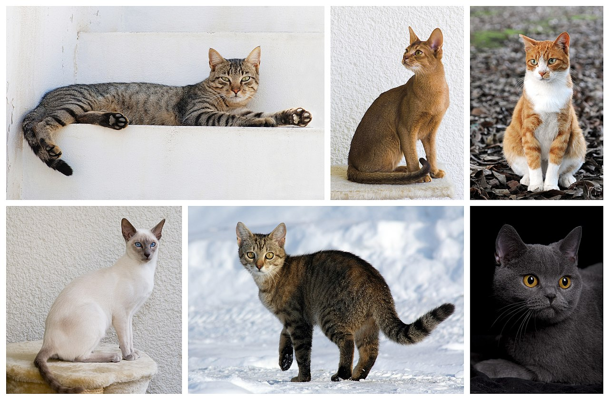
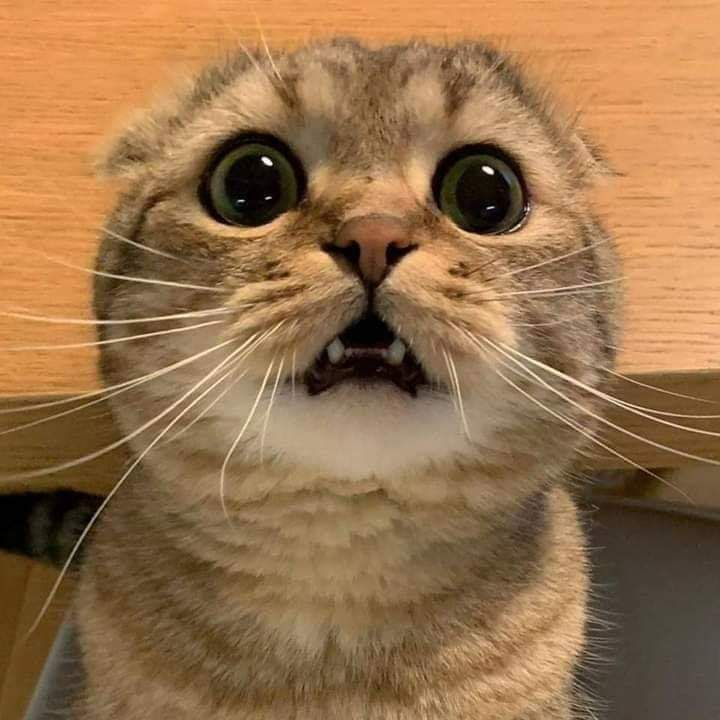

Home
ต้นกำเนิด
สายพันธุ์
แมวหาบ้าน
คาเฟ่แมว
การดูแลแมว
สิ่งจำเป็นในการเลี้ยงแมว
โรคประจำสายพันธุ์
วัคซีนที่จำเป็น
แนะนำคลิกนิก
ต้นกำเนิดของแมว
"แมวถูกปรับเป็นสัตว์เลี้ยงครั้งแรกในตะวันออกใกล้ช่วงประมาณ 7,500 ปีก่อนคริสต์ศักราช
เป็นที่เชื่อกันมานานแล้วว่าการเลี้ยงแมวเริ่มขึ้นในอียิปต์โบราณตั้งแต่ประมาณ 3,100 ปีก่อนคริสต์ศักราช"

แมว หรือ แมวบ้าน (ชื่อวิทยาศาสตร์: Felis catus) เป็นสัตว์เลี้ยงลูกด้วยน้ำนม อยู่ในตระกูล Felidae
ซึ่งเป็นตระกูลเดียวกับสิงโตและเสือดาว ต้นตระกูลแมวมาจากเสือไซบีเรียน (Felis tigris altaica)
ซึ่งมีช่วงลำตัวตั้งแต่จมูกถึงปลายหางยาวประมาณ 4 เมตร แมวที่เลี้ยงตามบ้าน จะมีรูปร่างขนาดเล็ก
ขนาดลำตัวยาว ช่วงขาสั้นและจัดอยู่ในกลุ่มของประเภทสัตว์กินเนื้อเป็นอาหาร มีเขี้ยวและเล็บแหลมคม
สามารถหดซ่อนเล็บได้เช่นเดียวกับเสือ สืบสายเลือดมาจากแมวป่าที่มีขนาดใหญ่กว่า ซึ่งลักษณะ
บางอย่าง ของแมวยังคงพบเห็นได้ในแมวบ้าน ไม่ว่าจะเป็นแมวพันธุ์แท้หรือแมวพันธุ์ทาง

แมวเริ่มเข้ามาเกี่ยวข้องกับวิถีชีวิตของมนุษย์ตั้งแต่เมื่อประมาณ 9,500 ปีก่อน ซึ่งจากหลักฐานทางประวัติศาสตร์ที่เก่าแก่ที่สุดของแมวคือการทำมัมมี่แมวที่ ค้นพบในสมัยอียิปต์โบราณ หรือในพิพิธภัณฑ์อังกฤษในกรุงลอนดอน มีการแสดงสมบัติที่นำออกมาจากปิรามิดโบราณแห่งอียิปต์ ซึ่งรวมถึงมัมมี่แมวหลายตัว ซึ่งเมื่อนำเอาผ้าพันมัมมี่ออกก็พบว่า แมวในสมัยโบราณทุกตัวมีลักษณะ ใกล้เคียงกัน
คือ เป็นแมวที่มีรูปร่างเล็ก ขนสั้นมีแต้มสีน้ำตาล มีความคล้ายคลึงกับพันธุ์ในปัจจุบัน ที่เรียกว่า แมวอะบิสสิเนียน